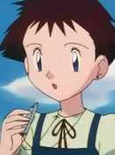
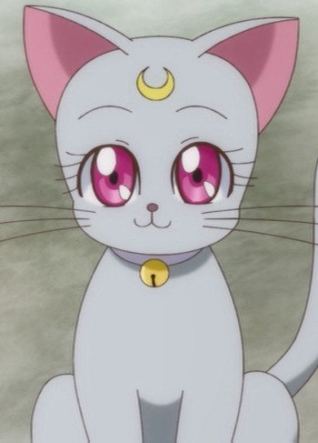
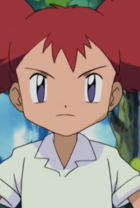

|  |
Arielle |
|
Arielle is a Pokemon Trainer with 6 Ledyba. She has look after her Lebyba when they were young. She controls them like a troops of a military. |
|  |
Diana |
- Sailor Moon Super S
- Sailor Moon Super S: The Movie
- Sailor Moon Sailor Stars
|
Diana is the future daughter of Luna and Artemis. She is the partner of Chibi-Usa. She is very curious, eager to help, and deeply polite. She is able to help the Senshi on occasion, despite her youth. |
|  |
Natalie |
- Pokemon Advanced Generations
|
Natalie is the youngest sister of Rita and Nicole. They own the Pretty Petal flower shop. She does not show kindness to travelers and has a crush on Brock. |
 |
Princess Crepe |
|
Princess Crepe is the princess of the Crepe. She is in love with Coco and believe that the two are engage. |